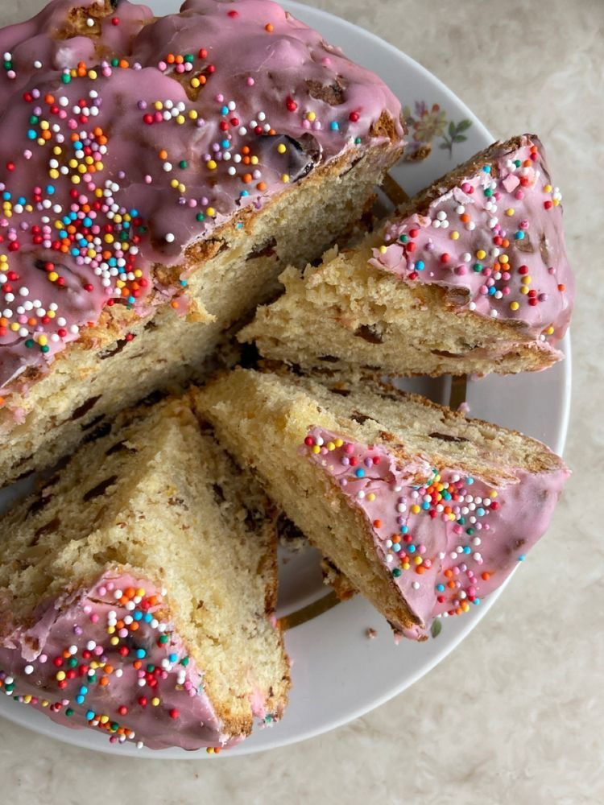

Beschrijving🐰
Er zijn veel recepten voor het bakken van paascake. Wij bieden de klassieke versie aan, gemaakt met gist en met toevoeging van melk en zure room. Ten eerste is het heel eenvoudig en ten tweede is het al jaren beproefd en getest. Volg dus gewoon de duidelijke stapsgewijze instructies en uw feesttafel zal worden versierd met prachtige, overheerlijke paastaarten met roze "hoeden". Normaal gesproken worden ze op Witte Donderdag gebakken. De belangrijkste voorwaarde is dat de sfeer in huis zo gunstig en rustig mogelijk is.

Ingredienten🌸
- Melk-0,5l
- Margarine - 300 g
- Eieren - 6 stuks
- Suiker - 2 kopjes
- Droge actieve gist - 11 g
- Bloem - 1,1-1,2 kg (ongeveer 9 kopjes met een inhoud van 200 ml)
- Zout - 0,5 theelepel
- Vanilline - 2 g
- Rozijnen - 150 g
Instructies🌞
- Bereid de ingrediënten voor. De eieren moeten op kamertemperatuur zijn. De melk moet licht warm zijn (verwarm deze lichtjes tot 38-40 graden Celsius).
- Giet de melk in een grote kom waarin u het deeg gaat mengen, voeg de gist en 1/2 kopje suiker toe en roer.
- Zeef de bloem.
- Voeg 3 kopjes bloem toe aan de melk en gist en meng.
- Bedek de kom met een handdoek en zet hem 1,5 tot 2 uur op een warme plaats (zodat het deeg in volume verdubbelt).
- Scheid de dooiers van de eiwitten.
- Voeg de resterende suiker toe aan de eidooiers.
- Klop de dooiers met de suiker wit (met een mixer). Voeg de vanille toe.
- Smelt de margarine op het laagste vuur (deze moet licht warm zijn).
- Zout het eiwit en klop het op.
- Het deeg was toen al gerezen.
- Voeg de geklopte eidooiers, de helft van de gesmolten margarine en de geklopte eiwitten toe aan het deeg in een kom.
- Voeg beetje bij beetje de bloem toe en roer het geheel eerst met een lepel.
- Strooi vervolgens een beetje bloem op het aanrecht en leg het deeg erop.
- Vet je handen in met margarine en kneed het deeg tot het niet meer aan je handen plakt.
- Leg het deeg in een kom, dek het af met een handdoek en zet het op een warme plaats gedurende 1,5-2 uur.
- Spoel de rozijnen af, giet er kokend water over, droog ze en rol ze door de bloem.
- Het deeg is gerezen. Voeg de rozijnen toe.
- Kneed het door het deeg.
- Vet de bakvormen in met margarine en bestuif ze met bloem. Zet de oven aan en verwarm hem voor.
- Giet het deeg in de vormpjes, vul ze tot 1/3 en laat ze nog 20 minuten rusten.
- Plaats de bakvormen met het deeg in de voorverwarmde oven op het middelste rooster. Bak de kulich ongeveer 1,5 uur op 150 graden Celsius. Mochten de bovenkanten aanbranden, dek ze dan af met vochtig keukenpapier.
- Versier de paastaarten met glazuur en sprinkles naar keuze. Eet smakelijk!
- Enjoy!❤️